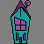
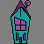

You quickly board your ship and race to Conventia. Inside the convention hall the Tallest, are busy
stalling Zim. When you barge in, he freezes. As you make your way through the crowd, he tries to flee.
You eventually capture him. Now back on Foodcourtia, you forbid him from taking breaks and NEVER let him
out of your sight!
 
